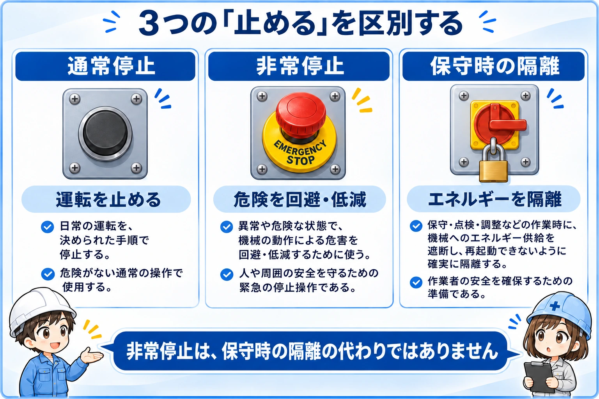
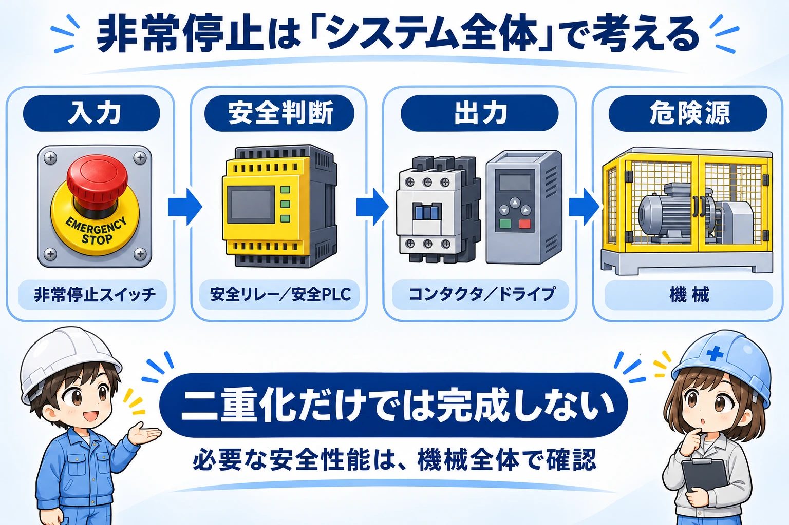
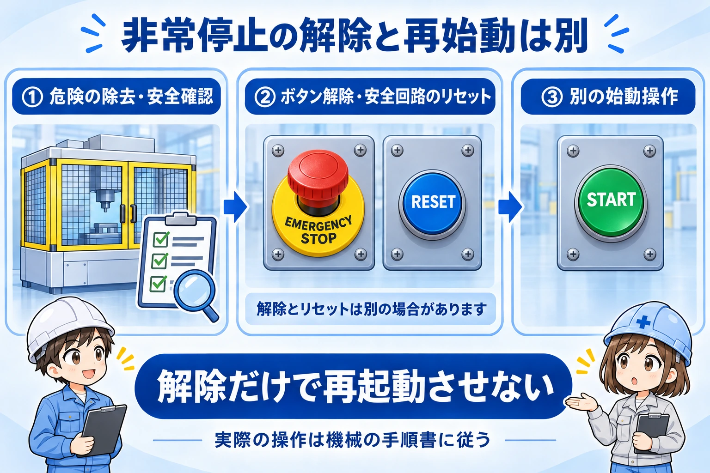

向いている人
- 非常停止スイッチの基本的な見方を知りたい人
- b接点と直接開路動作の違いを知りたい人
- 安全リレーや安全回路全体の役割をざっくり理解したい人
最終内容更新：
非常停止スイッチは、危険な状態や切迫した非常事態を、人の操作で止めるための安全入力機器です。ボタンを押すことをきっかけに、安全制御と出力機器が働き、危険な動きを止めます。
赤いボタンだけで安全が完成するわけではありません。入力から危険源までの全体を、機械のリスクと必要な安全性能に合わせて設計・検証します。
いいえ。非常停止は補助的な保護方策（付加保護方策）です。ガードやインターロックの代わりにも、保守作業のエネルギー隔離の代わりにもなりません。

先輩非常停止は最後に押せば何でも安全になるボタン、ではないんだ。

後輩危険を防ぐ仕組みを用意したうえで、非常時に使うものなんですね。
いずれも機械が止まって見えることがありますが、目的は異なります。まずはこの3つを分けて理解すると、現場での確認事項が整理できます。
| 区分 | 主な目的 | 混同しないこと |
|---|---|---|
| 通常停止 | 日常の運転を、決められた手順で止める | 通常停止のボタンを非常停止の代用品にしない |
| 非常停止 | 非常事態で危険な動きを停止させる | 動力や蓄積エネルギーがすべて消えるとは限らない |
| 保守時の隔離 | 作業中の予期しない起動やエネルギー放出を防ぐ | 非常停止を押しただけで内部へ入らない |

非常停止用押ボタンでは、赤い操作部と黄色い背景がよく使われます。押すと操作状態が保持され、意図した操作で解除します。回す方式だけでなく引く方式もあるため、実物の操作方法は機器の説明書で確認してください。
また、非常停止を「必ず全電源を一瞬で切ること」と覚えないでください。急な動力遮断が別の危険を生む場合もあり、停止方法や停止範囲は設備のリスクに応じて決まります。
b接点（NC接点）は、操作していない状態で閉じ、操作すると開く接点です。非常停止用押ボタンの停止用接点では、押して回路を開く考え方が基本になります。接点の基礎はNO / NCの違いも参考にしてください。
閉じている回路を監視する構成では、配線が切れても信号が失われるため、停止要求として扱えます。ただし、短絡などで信号が残る故障まで、NC接点だけで検出できるわけではありません。
直接開路動作は、操作部に加えた力を機械的に伝え、接点を開く機能です。接点の通常状態を表す「NC」とは意味が違います。溶着への対処も、規定された操作力・ストロークなどの条件を前提とするため、あらゆる故障に無条件で効くという意味ではありません。
一般のb接点付きボタンを、外見が似ているからと非常停止用へ置き換えないでください。用途への適合、直接開路動作、保持機構、定格、取付条件を、採用機器の仕様書で確認します。
非常停止機能は、入力、制御、出力、そして停止させる危険源までつながっています。安全リレーや安全PLCは、その途中で入力状態や故障を監視する役割を担います。

2系統の入力を監視する構成では、系統間の不一致などを診断に使えます。しかし、二重化したという事実だけで必要な安全性能が決まるわけではありません。検出できる故障、共通原因による故障、出力側の故障、復帰条件を含めて評価します。
たとえば、入力が戻っていても出力機器に異常が残っていれば、再起動を許可してよいとは限りません。出力機器の状態を戻して監視する構成もありますが、必要な監視方法は機器と回路設計によって異なります。
通常PLCのプログラムに停止条件を書くだけで、安全機能として十分だとは判断できません。一方で、安全性が確認されたセーフティコントローラ（安全PLC）を、適切な安全入出力と組み合わせる構成はあります。「PLCはすべて不可」「必ずリレーだけ」とも言い切れません。
安全PLCを使う場合も、要求される性能、プログラムの設計・検証、接続機器、設定を含めた確認が必要です。全体像は安全制御の基本、駆動部の機能はSTOの基本で整理できます。
非常停止を解除しただけで、機械が動き始めてはいけません。解除前に、なぜ押されたのか、危険が残っていないかを、設備の手順に従って確認します。

| 言葉 | 見るポイント |
|---|---|
| 非常停止の解除 | 押された操作部を、原因・安全確認後に意図して戻す |
| 安全リセット | 設けられている場合に、安全制御側の復帰条件を満たす操作。起動操作と混同しない |
| 再起動 | 安全を確認し、設備所定の別の起動操作を行う |
「ランプが消えた」「ボタンが戻った」だけで安全確認を済ませないことが大切です。人が危険区域に残っていないか、停止原因が解消されたか、作業が完了しているかなど、設備で定めた確認項目を守ります。
先輩復帰できないときに、原因を調べず何度もリセットするのは避けよう。
後輩動かすことより、なぜ復帰できないのかを担当者に確認するのが先ですね。
非常停止後でも、感電、残圧、ばね、重力による落下などの危険は残り得ます。清掃、詰まり除去、修理などで危険区域へ入る場合は、設備所定のエネルギー隔離、施錠・表示、残留エネルギーへの処置、安全状態の確認を別に行います。ロックアウト／タグアウト（LOTO）という呼び方もあります。
非常停止やガードの信号を短絡したり、安全機能を無効化したりして運転を続けないでください。異常を記録・共有し、設備の責任者や教育・訓練を受けた担当者による確認へつなげます。
作業者が行う日常の確認と、回路の設計・改造・安全性能の検証は別です。この記事は配線や改造の作業手順ではありません。実際の選定・設計・試験は、適用規格、機械のリスクアセスメント、メーカー資料、事業場の手順に基づいて担当者が実施してください。
最初は「赤いボタンを押すと止まる」で構いません。そこから、どう止めるか・故障をどう扱うか・どう安全に戻すかまで視野を広げると、図面や設備説明を読み違えにくくなります。
公式資料確認日：
ここでは公開されている公式解説を参照しています。個別設備への適合を保証するものではありません。機種固有の条件は採用製品の最新マニュアル、適用規格、設備の仕様書を優先してください。